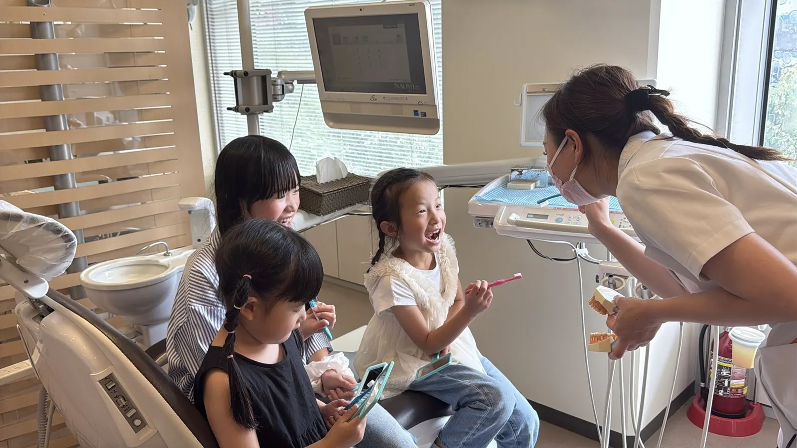

中村歯科医院の小児歯科についてのご案内です。
お子さまの成長に合わせた診療を行います。虫歯予防、フッ素塗布、シーラント、ブラッシング指導などを通して、将来の健康な歯を育てます。
痛くない・怖くない歯科体験を大切にしています。定期検診を習慣にすることで、生涯の歯の健康を守る基盤をつくります。

虫歯になってから治すのではなく、虫歯になりにくい歯と習慣をつくることを大切にしています。
お子さまの咬合誘導（予防矯正）にも対応しています。歯並びや噛み合わせが気になるときは、検診の際にご相談ください。
大阪府咲洲庁舎（さきしまコスモタワー）3階。Osaka Metro中央線「コスモスクエア駅」徒歩8分、ニュートラム「トレードセンター前駅」徒歩5分です。
診療時間は 9:30〜13:00 ／ 15:00〜19:00（土曜午後は15:00〜17:00）、日曜・祝日は休診です。
RESERVATION & CONTACT
診療時間 9:30〜13:00 ／ 15:00〜19:00 ※土曜午後は15:00〜17:00・日曜・祝日休診